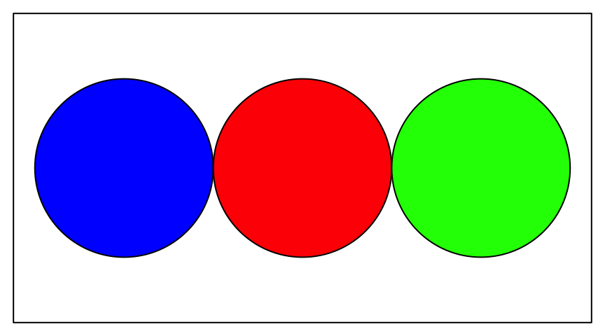
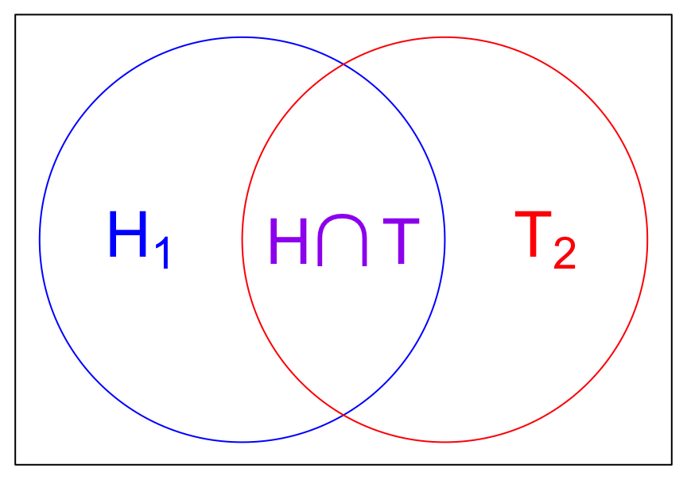

Intro to R
The first line in following block of code assigns (<-) the value 3 to the object x. Think of x as storing that value: whenever you print x (as the second line does), or use it in a function (as in the third line), it is replaced by the value 3.
x <- 3
x
x + xNote that, after you run the code, there are two lines of output below the code window. These correspond to each of the lines of code that printed something (the first line assigned but did not print anything; lines with <- will generally not produce output, just store, or “save” it to an object).
If you want, you can just use R as a calculator. Whenever you create something but don’t assign it anywhere (i.e., no <-), it will just print out the result. Try multiplying 283 \(\times\) 598 in the box below:
Did you get 169,234? You can do all the normal stuff you’d expect to do with a calculator. Some examples are below, but feel free to play around. Notice first that there are “comments” on several of the lines of code. Everything that follows a # sign is not evaluated by R, so you can use comments to explain what your code does or why you’re doing it.
283 * 598
5 ^ 2 # exponents
log(1) # the default logarithm is the natural log, i.e., ln
exp(0) # e^0
sqrt(25)
(4 + 1) * (8 / 2) ^ 3 # expressions follow normal order of operationsThe above examples were all printed out directly, but we could also assign them to objects, as well as perform functions with them. Objects have case-sensitive names and have certain restrictions like not starting with a number, but other than that, you can basically name things whatever you want. Try to be reasonable, though – you want your code to be readable and logical. (For more good R practices, check out this style guide. You are by no means required to follow it to the letter, but it is always helpful to see how other people format their code.)
Can you figure out what value the objectgrape holds? Write a 4th line of code to print the object and see if you are right.
banana <- 5 ^ 2
apple <- sqrt(banana)
grape <- banana - banana / applegrape2 <- x
# can't assign something to a number4 % 2
# not a functionblah
# we haven't made an object called blahsqrt("4")
# putting the 4 in quotes makes it a character string, not a numberQuick math review
We saw above that we can use R to do math … but you need some mathematical intuition as well! One of the most important mathematical concepts to be familiar with for the purposes of PHS 2000 is how exponents and logarithms relate and the ways in which they can be manipulated.
Most of the time in probability and statistics, we use the natural logarithm \(\ln(x)\), which we often write as \(\log(x)\), and the natural exponential function \(e^x\), which we also write as \(\exp(x)\). Recall that these are inverse functions: \[\exp(x) = y \iff x = \log(y)\] so if one side of an equation is exponentiated, we can always “get out of it” by applying a logarithm to both sides, and vice versa.
When we have a sum inside an exponent, we can decompose this into the product of two exponents: \[\exp(a + b) = \exp(a)\exp(b)\] Similarly, a product inside a logarithm can be written as a sum of logs: \[\log(ab) = \log(a) + \log(b)\] Of course, the same is true of the inverses of addition and multiplication, subtraction and division: \[\exp(a - b) = \frac{\exp(a)}{\exp(b)}\] \[\log\left(\frac{a}{b}\right) = \log(a) - \log(b)\] If we look at these functions on a graph, we can gain some intuition for a few important values you should know. 
We can see that \(\lim_{x\to-\infty} \exp(x) = 0\) and \(\lim_{x\to\infty} \exp(x) = \infty\). Somewhere in between, we have that \(\exp(0) = 1\). This is useful to know since probabilities can only take on values between 0 and 1, so exponentiating a negative number will give you such a value. It is also important to remember that exponentiating something can only give you a positive number (so check your work if that’s not what you get!).

Because of the inverse relationship of these functions, you can only “log” a positive number. Something like \(\log(-1)\) is undefined. We can see that \(\lim_{x \to 0}\log(x) = -\infty\), and \(\log(x)\) increases in \(x\) much more slowly than \(\exp(x)\). Importantly, \(\log(1) = 0\), so \(\log(x)\) for any \(x\) between 0 and 1 will give you a negative number.
You already confirmed above in R that \(\log(1) = 0\) and \(\exp(0) = 1\). Let’s see what we get when we reach the limits of those functions, or when we try to log something outside of its domain. In R, \(\infty\) is represented by Inf, and you can actually use it in functions. It will also be what’s returned to you as soon as a number is “too big”, even if it’s not actually infinite. Until you reach that point, very large (and very small) numbers are represented with scientific notation, so \(\exp(700) = 1.01 \times 10^{304}\) and \(\exp(-700) = 9.86 \times 10^{-305}\), as you can see when you run the code below.
exp(-Inf)
exp(700)
exp(710)
exp(-700)NaN, which stands for “not a number.” Interestingly, according to R, \(\frac{0}{0}\) is not a number but \(\frac{1}{0}\) is infinite, because R is actually returning limits when it returns Inf and -Inf, which is why we can also evaluate something like \(\exp(\infty)\).
log(-1)
0/0
1/0
exp(Inf)Practice
Rearrange these lines of code so that they all run with no errors and the last line prints the value 10.
broccoli <- lettuce * 2 / (tomato ^ 2)
broccoli
carrot
carrot <- broccoli + tomato
tomato <- 2
tomato
lettuce <- 4 ^ tomatotomato <- 2
tomato
lettuce <- 4 ^ tomato
broccoli <- lettuce * 2 / (tomato ^ 2)
broccoli
carrot <- broccoli + tomato
carrotfactorial(3) # = 3!cos(pi) # = -1log(43 * 11 + factorial(3)) - sqrt(exp(pi/7)) * cos(0)Why and how
Why probability and statistics?
You will learn a wide variety of quantitative methods in PHS 2000 from several different fields, which we hope you will find useful in your research. The common backbone to these is probability and statistics. A strong foundation in these concepts is essential for understanding the motivations and implementation of these methods and for seeing how they relate.
In this tutorial and throughout the course you’ll notice that we attempt to represent as much as possible in mathematical notation. As with any other language, mastering this notation helps you communicate efficiently and precisely. However, there’s no unified language – either in English or notation – across disciplines, and the differences and inconsistencies can be frustrating. One goal of this tutorial is to introduce you to notation and to formalize some concepts you may already be familiar with, in order to minimize this frustration. Representing methods in mathematical notation can be helpful in making connections to theory and to implementation in code, and it can also help both you and the PHS 2000 teaching team see what you do and don’t understand.
If you have taken several statistics courses before, you may be familiar with most or all of the concepts we go through in this tutorial. We nevertheless recommend that you at least read through it so that you have an understanding of what we expect you to be familiar with and to make sure you didn’t miss anything in your previous courses. If you’re not as comfortable with statistics or R or both, take notes as you go along that you can refer back to later. We hope for all of you that this can be a resource that you return to when you encounter difficulties over the course of the next year.
Why R?
There are several great options for statistical software out there, and you may already have mastered one or more of them. In fact, it’s beneficial for you and your career to be fluent in as many different languages as possible. We have chosen R to use in this class for several reasons. First of all, it’s free. You can install it on any and all of the computers you work on. You don’t have to go to the computer lab or use a virtual desktop, and you’ll never have to buy or renew a license. Second, it’s extendable and flexible. This means other people have already written packages which contain sets of functions that implement a number of common and less common statistical methods. If there’s not a package out there that does exactly what you’re looking to do, you can write your own functions to do it. We’ll see over the course of this year that the ability to write our own own code to implement the methods we learn, as well as simulations to test those methods, is a huge help in understanding the theory behind them.
R is extremely flexible and has a number of capabilities that go beyond statistics. In particular, R Markdown documents can be used to make your research reproducible as well as prepare a number of different types of reports, presentations, and more. In fact, this entire tutorial was written using the learnr package in R Markdown.
How to use this tutorial
For this tutorial, you don’t need to install anything. All the coding takes place within windows on this website itself. At some point before class starts you’ll need to install R and its useful companion RStudio if you haven’t already. For help with that you can visit this other tutorial.
To use the code windows on this website, simply type in the code you want to evaluate and then click “Run Code”. (Instead of clicking the button you can also press control+enter on a PC or command+enter on a Mac while your cursor is in the box.) Some boxes already have code that you just need to run (or which has already been run for you), others will require you to add to or modify what’s there, and some are empty and ready for you to fill. They generally only have as much space as you need for a given problem, but will also scroll so you can fill with as many lines of code as necessary (if your code disappears, make sure you haven’t scrolled and hidden it, or try clicking the Start Over button).
It may be helpful to install RStudio now and keep an open R document where you keep track of the code you learn in this tutorial and your own notes. If you want to practice changing the code and running it, it may also be easier to do there than in the code boxes here. Note that the objects you create are not generally available in later code boxes in the tutorial, so if you want more practice you should recreate what you do in a separate R session.
The sections have questions and R exercises designed to check your understanding, either interspersed in the text or in a section at the end labeled Practice. Think of these as a way to test your knowledge and decide for yourself whether you’re ready to move on. None of the questions are graded (and we can’t access your results anyway), you get as many tries as you want, and the solutions (and sometimes hints) are available. (If you only see a hint button, the solution is the last available hint.) You can easily copy and paste the solutions, but we suggest that you type them in yourself instead, as it’s better practice.
If you don’t feel ready to move on, you may want to check out the extra resources links (most of which are videos and practice at Khan Academy) at the bottom of most sections, or the glossary if you’re confused by the terminology. R resources are all lumped together in the final section and we highly recommend checking them out to advance your learning, either during or after you’ve completed this tutorial.
If you come across any errors or have technical difficulties, please notify Louisa, a former PHS 2000 student and Teaching Fellow, at louisa_h_smith@g.harvard.edu.
If you don’t feel ready to move on, you may want to check out the extra resources links (most of which are videos and practice at Khan Academy) at the bottom of most sections, or the glossary if you’re confused by the terminology. R resources are all lumped together in the final section and we highly recommend checking them out to advance your learning, either during or after you’ve completed this tutorial.
If you come across any errors or have technical difficulties, please notify Louisa, a former PHS 2000 student and Teaching Fellow, at louisa_h_smith@g.harvard.edu.
Vectors in R
So far we have seen that we can assign a single numeric value to an object. There are many types of objects in R, one of which is a vector.
A vector is a set of values that are all of the same type. Two important characteristics of a vector are its length and its class, or type. So far we have been looking at numeric vectors with length = 1.
Numeric vectors
Here are several numeric vectors of length 6. Run the code and then try playing around with it (substitute different numbers) to see if you can figure out what’s going on with each line before reading ahead.c(3, 52, 12, 875, 354, 3)1:6seq(10, 18, by = 2)seq(10, 20, length.out = 6)rep(32, times = 6)rep(1:2, each = 3)c(). This will be one of your most-used functions. Try creating the vector 932, 283, 194:
c(932, 283, 194)## [1] 932 283 194Just like we did with a vector of length 1, if we want to “save” values instead of just printing them out, we can assign vectors of all sizes to an object. We can also check what type of vector we created using the class() function:
obj <- c(4, 29, 40, 9384, 584)
class(obj)We can get numbers in a sequence by putting a : between the first and last number that we want. So to get the vector 100, 101, 102 we would write 100:102.
49, 48, 47:
49:47## [1] 49 48 47If we want to count by something other than ones, we can use the seq() function. Much like the : function, it creates a sequence of numbers. Its first argument is the value to start with, the second the value to end with, and then you can choose an option for how to get from one to the other. The by argument specifies how many to count by: seq(0, 100, by = 10) will count from 0 to 100 by 10s. The length.out argument specifies how long we want the resulting vector to be. So if we want to split 32 to 212 into 101 equal values, we would write seq(32, 212, length.out = 101).
seq() function, create the vector 2, 4, 6, 8 and assign it to x, then create the vector 2, 5, 8 and assign it to y. Use the by argument first and the length.out argument next. Before assigning the vectors you may want to just print them out to make sure your code is doing what you expect.
x <- seq(2, 8, by = 2)
y <- seq(2, 8, length.out = 3)The rep() function just repeats whatever its first argument is. The second argument specifies how many times to repeat it. So if we had an object called x, and we wanted to repeat it 3 times, we would write rep(x, times = 3). Note that x itself could be any length. So if we wanted 11, 8, 11, 8 we could write rep(c(11, 8), times = 2). On the other hand, suppose we wanted 11, 11, 8, 8. In that case, we use the argument each to specify how many times we want each element of the vector repeated: rep(c(11, 8), each = 2).
"hello", "hello", "hello" using the rep() function:
rep("hello", times = 3)## [1] "hello" "hello" "hello"Character vectors
As you saw just above, we can also have vectors that are not numeric. The vector you created above is an example of the character class. Here’s another:
c("dog", "cat", "fish")You can do a lot with character strings in R, but for our purposes right now they are not super useful because we can’t do math with them. Try adding “dog” + “cat”.
Hint: You should get the error “non-numeric argument to binary operator”.
dog <- 3
cat <- 7
dog + catword <- "word"Logical vectors
We can also have logical vectors. There are only two values to this class:TRUE and FALSE, which must be capitalized (they may also be abbreviated T and F, though this is technically not a best practice).
c(TRUE, FALSE)3 < 5
100 + 1 > 102
2 + 2 == 42 + 2 = 4rep(c(TRUE, FALSE), each = 3)c(1 < 2, 2 < 3, 3 < 4, 4 < 5)rep(4 != 5, times = 5)Instead of a double equals sign in the last one, we have !=. This stands for “not equals”, or \(\neq\). We can also evaluate \(\leq\) and \(\geq\) statements with <= and >=.
FALSE takes on the value of 0 and TRUE takes on the value of 1, so unlike characters, you can do math with them. Guess what each of these will print before running the code.
TRUE * 354(1 > 2) + 3TRUE + FALSEPractice
(T < F) * (3 < 4) + (0 == 1) * exp("dog" != "cat") + cos(3 > 3) * (6 == 2)(T > F) * (3 < 4) + (0 != 1) * exp("dog" == "cat") + cos(3 != 3) * (6 > 2)4, 4, 4, 5, 5, 5, 4, 4, 4, 5, 5, 5.
rep(rep(seq(...)))## Error in eval(expr, envir, enclos): '...' used in an incorrect contextrep(rep(seq(4, 5, by = 1), times = 2), each = 3)## [1] 4 4 4 5 5 5 4 4 4 5 5 5Some probability rules
It’s important to be familiar with some basic concepts in probability to understand how statistics works and get the most of out PHS 2000. We’ll keep developing skills in R as we start to learn (or review, for some of you) some of these basics in probability and statistics. Some of these ideas will be reiterated in the course, so come back to this tutorial as you encounter them for a quick review.
Frequency definition of probability
If an experiment is repeated \(n\) times under identical conditions, and some event \(A\) occurs \(m\) times, we can define the probability of that event \(P(A)\) as the proportion of times the event occurs as \(n\) approaches infinity: \[P(A) = \lim_{n \to \infty} \frac{m}{n}\] For example, imagine a coin is flipped \(n\) times. Let \(T\) denote the event that ‘tails’ is face up. \[P(T) = \lim_{\# flips \to \infty} \frac{\#\text{ of tails}}{\#\text{ of flips}}\]
We know the probability of flipping ‘tails’ with a fair coin is 0.5, but if we flip a coin a finite number of times, we probably won’t get ‘tails’ exactly half the time. Let’s see how close we get, though. Instead of a real coin, we’ll use R to simulate flipping a coin \(n\) times.
First, we’ll start with some number for \(n\), let’s say 100. We’ll assign this value to an object n so that we can reuse it later – and when we increase \(n\) toward infinity, we won’t need to replace it everywhere. We’ll also need a coin with the appropriate sides, ‘heads’ and ‘tails’.
Create an object n that is a numeric vector of length 1 with a value of 100 and another object coin that is a character vector "heads", "tails".
set.seed(123)
n <- 100
coin <- c("heads", "tails")
flips <- sample(coin, size = n, replace = T)
flips_tails <- flips == "tails"
m <- sum(flips_tails)n <- 100
coin <- c("heads", "tails")Now we need another function to help “flip” the coin. We’ll use the function sample(), which takes a random sample from a given vector. Functions take “arguments” as input. If you don’t know or have forgotten what arguments a function requires, or what it uses as default values if you don’t supply it with anything, you can type ? and the function name to bring up the help file. (This website also has the same information, and more, in a more readable format than shows up in this tutorial.)
?sampleThe sample function takes the arguments x =, size =, replace =, and prob =. Both of the final two have default values (FALSE and NULL, respectively), so we don’t need to specify anything in particular if we are happy with those. The help file gives lots of details about what kinds of values or objects each argument can take, as well as a description of what the function does and useful references and examples.
Returning to our experiment, we’ll give the sample() function the coin vector we created and tell it to sample size = n times. We also need the replace = TRUE argument, which means that it can sample the same value more than once (Or else you’d be limited to 2 flips, a ‘heads’ and a ‘tails’! Try replacing the TRUE with FALSE to see what happens.).
flips <- sample(coin, size = n, replace = TRUE)
# unnamed arguments are evaluated in order, so R knows that x = coinflips object is a character vector of length 100. Here are two useful functions you can use to examine it a little more closely. length() gives you the number of elements in a vector, and head() lets you look at the first 6 elements (very useful when you have a big object and don’t want to print out the whole thing; you can also use tail() to look at the last 6).
length(flips)head(flips)Now we need an easy way to figure out what fraction of the flips are ‘tails’. We already have the denominator, n, we just need m, the number of ‘tails’. Recall that we can check whether things are equal using ==. Imagine that the flips vector only contains two elements: "heads", "tails". If we run flips == "tails" with that object, we’ll get a logical vector of the same length: FALSE, TRUE.
c("heads", "tails") == "tails"
c(53, 19, 392) == 19 # which elements (if any) equal 19?
1:5 > 2 # which integers from 1 to 5 are greater than ?Use == with our original flips object to create a logical vector indicating which elements are ‘tails’. Assign this to an object flips_tails. Use the length() and head() functions to explore that object.
flips_tails <- flips == "tails"
length(flips_tails)
head(flips_tails)Finally we need to count the number of TRUE elements in our flips_tails object. Recall that we can perform mathematical functions on logical values, and TRUE = 1. To count the number of TRUEs, we can just sum over the entire flips_tails vector, since FALSE = 0. We can do that with the sum() function.
sum(flips_tails)(Whenever you are doing something like this, do a quick sanity check. Does this value make sense as the number of ‘tails’ that would be flipped out of 100 coin flips?)
In order to calculate \(\frac{m}{n}\), we need to store that sum as m and divide by n:
m <- sum(flips_tails)
m/nAnd that’s it! Now you can play around with the code to see what happens when \(n \rightarrow \infty\) (though don’t make \(n\) tooooo big or you might crash this tutorial…). How would you change the code to estimate the probability of flipping ‘heads’ instead?
n <- 100
coin <- c("heads", "tails")
flips <- sample(coin, size = n, replace = TRUE)
flips_tails <- flips == "tails"
m <- sum(flips_tails)
m/nAnother experiment
We have 3 balls in a cup, one blue, one red, one green.
Let \(B\), \(R\), and \(G\) denote the event that such a color ball is chosen, respectively.
These events are mutually exclusive: if you picked blue, you didn’t pick red or green. This idea is illustrated by this diagram in which none of the events overlap. 
We can also describe this situation by writing \[P(B \cap R) = 0\] \[P(R \cap G) = 0\] \[P(B \cap G) = 0\] This tells us you can’t pick both at once (the probability of doing so is 0): the events don’t intersect. The \(\cap\) symbol refers to the intersection of those events – whether they “overlap”, or both events could happen at the same time.
So what do we know about \(B\) and \(R\)? Well, there’s no possibility of picking \(B\) and \(R\). However, we might pick \(B\) or \(R\) (i.e., something besides \(G\))!
\[P(B \cup R) = \lim_{n \to \infty} \frac{\#\text{blue }or\text{ red balls}}{n}\]
\(B \cup R\) is the union of the two events – whether at least one of the events occurs.
Whenever two events are mutually exclusive, we can just add their individual probabilities to get the overall probability of either one of them. So we can write
\[P(B \cup R) = P(B) + P(R)\]
In English, we can read this as “the probability of choosing a blue or a red ball is equal to the sum of the probability of choosing a blue ball and that of choosing a red ball.”
See if you can understand what’s going on in this code based on the code for the coin experiment we worked on above. (Some steps have been condensed compared to the coin example; in other words, the intermediate objects weren’t stored, but used directly in functions.)
n <- 10000
draws <- sample(c("Blue", "Red", "Green"), n, replace = T)
sum(draws == "Blue")/n
sum(draws == "Red")/nsum(draws == "Blue")/n + sum(draws == "Red")/nsum(draws == "Blue" | draws == "Red")/nThe | means “or”. Just like before, we’re creating logical values, but now they will be TRUE if either one of the statements is true, and FALSE only if they both are false (in this case, for the elements of draws that are "green").
Compare this with &: if we write draws == "Blue" & draws == "Red", an element of draws will only be TRUE if both statements are true.
You can play around with all the code here. Notice that you’ll get different results every time you run the code. We’re working with finite \(n\), here, and each time we run the sample() function we’re running a random process, so we can different values in the draws object every time.
n <- 10000
draws <- sample(c("Blue", "Red", "Green"), n, replace = TRUE)
sum(draws == "Blue")/n
sum(draws == "Red")/n
sum(draws == "Blue" | draws == "Red")/n
sum(draws == "Blue" & draws == "Red")/nFlipping multiple coins
What if our events aren’t mutually exclusive? Let’s return to a coin flipping experiment, but imagine this time that the experiment is to flip 2 coins.
Let \(H_1\) denote the event that the first coin is a ‘heads’.
Let \(T_2\) denote the event that the second coin is a ‘tails’.
Keep in mind that there are four possible outcomes of the experiment: ‘heads’ & ‘heads’; ‘heads’ & ‘tails’; ‘tails’ & ‘heads’; and ‘tails’ & ‘tails’. The first event of interest, \(H_1\), occurs in the first two outcomes, and \(T_2\) occurs in the second and fourth. The fact that the diagram below (not to scale) has an overlapping area depicts the fact that there exists an outcome (‘heads’ & ‘tails’) in which both events occur – their intersection.

Now they are no longer mutually exclusive: \(P(H_1 \cap T_2) \neq 0\). If we want to know the probability of their union – that is, \(P(H_1 \cup T_2)\), the probability that we get a ‘heads’ first or a ‘tails’ second, we can no longer just add the individual probabilities.
In fact, \(P(H_1) = 0.5\) and \(P(T_2) = 0.5\) (we’re still assuming fair coins), so if we just added the probabilities together, we would have a probability of 1, which doesn’t make sense – it would imply that every single time we flipped two coins, the first would be guaranteed to be a ‘heads’ or the second would be ‘tails’ (i.e., the ‘tails’ & ‘heads’ outcome doesn’t exist). This is an overestimate of the probability of the union because \(P(H_1)\) includes all those times we also get ‘tails’ next, and \(P(T_2)\) includes all those times we also got ‘heads’ first (the overlapping area in the diagram) – but those two situations are exactly the same outcome, so we are double-counting all the times we get ‘heads’ & ‘tails’.
We have to subtract off the doubly-counted intersection: \(P(H_1 \cup T_2) = P(H_1) + P(T_2) - P(H_1 \cap T_2).\) Since \(P(H_1 \cap T_2) = 0.25\) (it occurs in \(\frac{1}{4}\) of the possible outcomes), \(P(H_1 \cup T_2) = 0.5 + 0.5 - 0.25 = 0.75\).
Note that this formula also applies to the case where the events are mutually exclusive, as in our example with the balls. In that case, the last term is just 0, which is why we could write the simpler expression \(P(B \cup R) = P(B) + P(R)\) above.
Challenge: See if you can design an experiment in R to simulate this experiment.
Hint: Try making two flips objects: one for the first coin and one for the second. Remember to name them different things.
Independence, briefly
To recap, to find the probability of either one of two events (their union), we can add their individual probabilities, but if they both can happen at once (they’re not mutually exclusive) we need to subtract off the probability that they both happen (their intersection).
But how do we find the probability that they both happen? It depends on whether the events are independent. Independence essentially means that knowing whether one event happened doesn’t give you any information about another event. In our coins experiment, knowing that one coin landed on ‘heads’ tells you nothing about whether the next coin will be ‘heads’ or ‘tails’. (In fact, believing that it does will lead to the gambler’s fallacy!)
If two events are independent, we can multiply their individual probabilities to get the probability of their intersection: \[P(H \cap T) = P(H) \times P(T)\]
In English, this says that the probability that we get a ‘heads’ first and then a ‘tails’ is the product of their individual probabilities. We can easily see that \(P(H \cap T) = \frac{1}{4}\) because the events occur simultaneously in one of the four possible outcomes, but we also could come to the same conclusion by multiplying the probability of a heads on the first flip by the probability of a tails on the second flip: \(\frac{1}{2} \times \frac{1}{2} = \frac{1}{4}\).
We’ll see the idea of independence show up in more detail later in this tutorial, and again and again in the course, but remember that we can only multiply the overall probabilities like this if events are independent.
Discrete random variables
So far we’ve looked at the probability of a given event or combination of events that result from an experiment. Now we’ll learn how to characterize the probabilities of all the possible outcomes of an experiment: its probability distribution.
Let’s first talk about those possible outcomes. We can assign them numeric values. For example, when we flip a coin once we have two possible outcomes: ‘heads’ (which we’ll assign the value 1) and ‘tails’ (0). Because the value (1 or 0) that we observe comes from some random process (a coin flip), we call it a random variable.
A random variable is the numerical outcome of some random event. That may sound a bit obtuse, but we’ll see plenty of examples here and throughout the course. We generally use capital letters to denote random variables and lower case letters to denote their realizations, or the values that they take on.
Consider the following characterization of the coin flip:
\[ P(X = x) = \begin{cases} 0.5 & \text{for } x = 0 \\ 0.5 & \text{for } x = 1 \\ \end{cases} \]
The random variable that represents the outcome of the coin flip experiment is \(X\). It can take on two possible values: \(x = 0\) (‘tails’) and \(x = 1\) (‘heads’). Each of them has equal probability of occurring (if it were an unfair coin, we could assign probabilities other than 0.5).
Probability mass functions
The function above is called a probability mass function (pmf). For a discrete random variable \(X\), its pmf, often denoted \(f(x)\), is the function that describes the probability that \(X\) takes on each of its possible values: \[f(x) = P(X = x)\]
The fact that the random variable has a discrete probability distribution means that it has a countable number of possible values (we’ll contrast this later with continuous distributions.)
For some distributions we may be able to enumerate those possible values. For example, for an experiment with possible outcomes \({0, 1, 2}\), we may have that: \[f(x) = \begin{cases}
0.1 & \text{for } x = 0 \\
0.5 & \text{for } x = 1 \\
0.4 & \text{for } x = 2 \\
\end{cases}
\] (We’ll leave implicit the fact that \(f(x) = 0\) for all other values of \(x\).) This describes a discrete probability distribution: 
In other cases, we may have a single expression that produces those values. For example, the Poisson distribution can take on any integer value from 0 to infinity. Its pmf, which depends on the rate parameter \(\lambda\) (a constant value, like 1.5 or 50, that helps define a distribution) is:
\[f(x) = \frac{\lambda^x e^{-\lambda}}{x!}\] for \(x = 0, 1, 2, \ldots\). The pmf for the Poisson(2) distribution (we generally put the parameters of a distribution in parentheses following its name, so Poisson(2) means that its rate parameter \(\lambda = 2\)) looks like this:
though of course the x-axis could continue to infinity, if there were space on your computer screen. It’s pretty pointless to extend it further, though, because the probability \(P(X = x)\) of any given value of \(x\) greater than those shown is very close to 0.
Graphing these pmfs shows us that they have some similarities. In fact, all pmfs (remember, pmfs are for discrete distributions only), follow certain rules:
The probabilities over all the possible values must sum to 1
None of the probabilities can be < 0 or > 1
Probability distributions in R
Now let’s learn some new R functions in order to help us explore discrete probability distributions and their pmfs.
There is a family of functions for each of many distributions, including the binomial (the coin flip experiment was a special case of this called the Bernoulli) and the Poisson (the Poisson is often used for counts, such as cases of disease).
Each of these distributions has a ‘shortcut’ or abbreviation in R. For example, binomial is binom and Poisson is pois. Some other shortcuts for discrete distributions include geom for the geometric distribution and nbinom for the negative binomial (you don’t have to know these).
To get the pmf for a given distribution at a given \(x\) value, you simply attach the prefix d to the shortcut. The function may require that you specify other parameters of the distribution, like we did with \(\lambda = 2\) in the Poisson above. The parameter associated with the Bernoulli (coin flip) distribution is sometimes denoted \(p\), other times \(\pi\), but in any case it is equal to \(P(X = 1)\). In R, those arguments are lambda = and prob =, respectively.
x <- c(0, 1)x <- c(0, 1)dbinom command (which also takes the size = argument: size = 1 means we’re working with 1 coin, which is the Bernoulli distribution):
fx <- dbinom(x, size = 1, prob = 0.5)
cbind(x, fx) # concatenates vectors in columnsThat looks like the function we saw above! This is the Bernoulli(0.5) distribution.
Now look at the Poisson(2) distribution (again, \(\lambda = 2\)). We’ll look just at values through 15.
First create thex object with the possible values of the Poisson distribution (again, just 0 through 15). Then create the fx object using the appropriate function (you will need the argument lambda = 2). Print out the values and see whether they match the graph from earlier (just eyeball them).
x <- 0:15
fx <- dpois(x, lambda = 2)
cbind(x, fx)Now look at some graphs of pmfs as you change the distributions and the parameters. You will use the pmf_func() function (which was created for this tutorial and is not included with R, so you won’t be able to use it outside the tutorial), which takes arguments x = and fx =, like you created earlier. I’ve started you off with one pmf; play around with the first two lines of the code to create new graphs. (You may want to look up the distributions on Wikipedia to get an idea of what values they can take on and what the parameters mean; the pages have very helpful sidebars. You can also find the help files for each distribution here, which will help you figure out the shortcuts and know which extra arguments (like prob or lambda) the functions require.)
x <- 0:10
fx <- dgeom(x, prob = .3)
pmf_func(x, fx)Practice
We saw earlier that the pmf for the Poisson distribution is \[f(x) = \frac{\lambda^x e^{-\lambda}}{x!}\] Use that expression to calculate \(f(3)\) (again with \(\lambda = 2\)) in R. Does this match up with what you get when you use R to calculate the value with the appropriate function? (Hint: it should also match up with the graph and table above.) Try with some other values of \(x\) and \(\lambda\).
lambda <- 2
x <- 3
lambda ^ x * exp(-lambda) / factorial(x)
dpois(x, lambda)Instead of writing out the Bernoulli pmf as a piecewise function \[ f(x)= \begin{cases} 1 - p & \text{for } x = 0 \\ p & \text{for } x = 1 \\ \end{cases} \] where \(p\) is the probability parameter (0.5 for a fair coin), we can condense it into a simpler expression, much like that for the Poisson pmf. That function is of the form \(f(x) = a^bc^d\), where \(a,b,c,d\) are functions of \(x\) and \(p\). First take some time to think about what could replace \(a,b,c,d\) in order to produce the same values as the piecewise function, then answer the question below.
More resources
For more info about random variables, watch this; the several videos that follow go into more depth about discrete distributions.
Cumulative distribution functions
Another way we can characterize probability distributions is via their cumulative distribution functions (cdfs). While only discrete distributions have pmfs (later we’ll see what continuous distributions have instead), both discrete and continuous distributions have cdfs, defined as
\[F(x) = P(X \leq x)\]
Returning to our example of the fair coin, we can plug in the two values that the random variable \(X\) can take on:
\(F(0) = P(X \leq 0) = 0.5\)
\(F(1) = P(X \leq 1) = 1\)
We could in fact plug in any value of \(x\): the cdf of a discrete distribution is a step function with jumps at each of its possible realizations:

This may seem kind of strange. It is essentially just telling us that the probability of a ‘tails’ (\(P(X \leq 0)\), since ‘tails’ is 0) is 0.5 and the probability of a ‘heads’ or a ‘tails’ (\(P(X \leq 1)\)) is 1. The probability of neither ‘heads’ nor ‘tails’ (\(P(X < 0)\)) is of course 0. We aren’t getting any new information from a cdf that we couldn’t get from a pmf – we’ll see directly how they relate later – but it turns out that cdfs are very useful.
Just like pmfs, cdfs follow certain rules:
As \(x\) approaches \(- \infty\), \(F(x) = 0\)
As \(x\) approaches \(\infty\), \(F(x) = 1\)
\(F(x)\) is non-decreasing (it never gets smaller as \(x\) increases)
Confirm that the graph above adheres to these rules. Then think about how these rules connect to those we saw for pmfs (we’ll look at the connection more explicitly later).
We know that no probability \(P(X = x)\) can be less than 0 or greater than 1; we also know that the total probability over all values of \(x\) must equal 1 exactly. The fact that the probabilities \(P(X = x)\) can’t be negative tells us why the cdf must be non-decreasing – we can never decrease in cumulative probability when moving from left to right along the x-axis of the cdf. This also explains why the lower limit is 0. The upper limit must be 1 because the total probability \(P(X \leq x)\) must be 1 at its most extreme value (possibly approaching \(\infty\), though for the fair coin the largest possible value the random variable can take is only 1).
Another example
We briefly looked at a distribution defined by \[f(x) = \begin{cases} 0.1 & \text{for } x = 0 \\ 0.5 & \text{for } x = 1 \\ 0.4 & \text{for } x = 2 \\ \end{cases} \] What does \(F(x)\) look like? (Likepdf_func(), cdf_func() is a special function for this tutorial that you won’t find in base R. It takes the same arguments as pdf_func(), that is, the values \(P(X = x)\) from the pmf.)
x <- 0:2
fx <- c(0.1, 0.5, 0.4)
cdf_func(x, fx)Try replacing the values above with those from other pdfs we’ve looked at (you’ll need to change both x and fx, and make sure they’re the same length). Confirm that they meet the above criteria. Then try the ones you considered in last section’s multiple choice question that didn’t correspond with true probability distributions, and see that they don’t follow the rules.
Lots of coins
Now let’s look at an example in which a cdf may be particularly useful. Instead of flipping one coin, imagine we are flipping ten coins and counting the number of ‘heads’ (this is the binomial distribution with parameter \(n = 10\), or size = 10 in R language). Again we’ll call this random variable (the total number of ‘heads’ in ten flips) \(X\).
If you pay $5 to enter the game, your friend agrees to pay you $1 for every ‘heads’ you flip (you trust that your friend is playing with a fair coin). You want to know what the chances are that you’ll lose money on the game, that is, that you’ll get a value of \(X\) that’s less than 5.
The cdf is useful here because we want to know the probability of a set of outcomes: in this case, the outcomes \(X = 0\), \(1\), \(2\), \(3\), or \(4\). If \(X = 5\), we come out even, and if \(X > 5\), we come out ahead.
In order to calculate this probability, we need to know \(P(X = 0)\), \(P(X = 1)\), \(P(X = 2)\), \(P(X = 3)\), and \(P(X = 4)\). Only one of these things can happen in a given game – they are mutually exclusive – so we can just add their probabilities to find the probability that any one of them happens. \[P(X \leq 4) = P(X = 0) + P(X = 1) + P(X = 2) + P(X = 3) + P(X = 4)\] We could also write this \[P(X \leq 4) = \sum_{x = 0}^4 P(X = x)\] This tells us the relationship between the pmf and the cdf. For a discrete random variable which can take on a minimum value of 0, as in our scenario and many other distributions, \(F(x) = \sum_{i = 0}^x f(i)\).
If we look at a graph of the cdf for our coin game, we can see what’s going on. At each jump (from an open circle to a closed circle), we are simply adding \(P(X = x)\), or \(f(x)\), for that \(x\)-value.
We can see from the graph that we have less than 40% chance of losing money by playing the game. Maybe you’re willing to take that risk, maybe you’re not. Or maybe you can look at the cdf and decide to negotiate with your friend to pay only $4 to enter, which would just about halve your chances of losing out.
Cumulative distribution functions in R
In the last section we saw that there is a class of functions in R that begin with d, followed by an abbreviation for the name of a probability distribution. We used these to find values from the pmfs for those distributions. Now will see that the functions for cdfs operate similarly, only these begin with p.
cbind() function to print out the x and Fx values to confirm they match what we have for the cdf above.
x <- c(0, 1)
fx <- dbinom(x, size = 1, prob = 0.5)
Fx <- pbinom(x, size = 1, prob = 0.5)x <- c(0, 1)
fx <- dbinom(x, size = 1, prob = 0.5)
Fx <- pbinom(x, size = 1, prob = 0.5)
cbind(x, Fx)x <- 0:10
Fx <- x <- 0:10
Fx <- ppois(x, lambda = 2)
cbind(x, Fx)Like we said earlier, the coin game in the last example fits the binomial probability distribution. The binomial distribution is just the sum of independent Bernoulli trials, or individual coin flips. When we previously used the binom functions, we used the argument size = 1 because we were only flipping one coin. To fit our example, we would use the argument size = 10. Use the code box below to figure out the exact probability that you would lose money (remember that it should be a bit less than 0.4, based on our eyeballing of the graph above). Then sum across the appropriate values of the pmf to make sure you get the same answer, to show yourself that the cdf and the pdf give you the same information.
pbinom(4, size = 10, prob = 0.5)
dbinom(0, size = 10, prob = 0.5) + dbinom(1, size = 10, prob = 0.5) +
dbinom(2, size = 10, prob = 0.5) + dbinom(3, size = 10, prob = 0.5) +
dbinom(4, size = 10, prob = 0.5)Marginal vs. conditional
Let’s move away from coins and balls and start thinking in terms of examples that are more similar to those that may appear in your work.
Let \(D \in \{0, 1\}\) denote the absence or presence of disease in some individual. This means that \(D\) is a random variable with two possible values (0 and 1), meaning that it must have a discrete distribution. In particular, the only possible distribution a binary variable like \(D\) can have is Bernoulli (just like the coin flip!).
(If you aren’t really feeling this idea that disease is a random flip of a coin, know that we will be of course looking at factors that explain the probability of disease or other outcomes, but we assume that even once we’ve accounted for these factors of interest, there is some randomness left over that we can’t or don’t attempt to explain.)
Imagine that we are looking at a population in which the disease is pretty common: any given individual has a 30% chance of having it. This means we can define the probability mass function:
\[f(d) = \begin{cases} 0.7 & \text{for } d = 0 \\ 0.3 & \text{for } d = 1 \\ \end{cases} \]
or, because this is a Bernoulli random variable, we saw we could write the pmf \(f(d) = 0.3^d0.7^{1 - d}\). Before moving on, think about how you would write out the cumulative distribution function.
A second random variable
Now let’s imagine we have a test to detect the presence of the disease (but, like most tests, it’s not completely accurate). We’ll say \(T\) is the random variable, also Bernoulli distributed, where a value of 1 indicates that an individual tests positive and 0 indicates a negative test.
Let’s try to describe the probability that an individual tests positive for the disease: \(P(T = 1)\). What information might you have that could affect how you describe this probability?
Do you think the probability of testing positive, \(P(T = 1)\) has anything to do with the probability of actually having the disease, \(P(D = 1)\)?
We hope so, or else the test is pretty worthless! These random variables are not independent. We saw before that independence means that information about one event doesn’t tell you anything about another event. But in this situation, testing positive tells you something about whether an individual has the disease – that they are more likely to have it than if they tested negative.
Recall that two events \(A\) and \(B\) are said to be independent if \[P(A \cap B) = P(A) \times P(B)\]
If this were the case for our disease example, we could find the probability that someone both has disease and tests positive simply by multiplying the marginal probability of the disease by the marginal probability of testing positive: \[P(D = 1, T = 1) = P(D = 1) \times P(T = 1)\]
(We refer to probability of the intersection of two events \((D = 1) \cap (T = 1)\) as their joint probability, and we can separate the two with a comma instead of using the \(\cap\) symbol.)
This equality would only hold if whether you test positive has nothing to do with whether you have disease – if it’s constant no matter what.
Marginal vs. conditional probabilities
\(P(T = 1)\) is a marginal probability: it tells us the probability of testing positive overall in the population, ignoring disease status. We’ve said \(P(D = 1) = 0.3\) in this population. Will \(P(T = 1)\) be the same in a population where \(P(D = 1) = 0.1\)? What about if \(P(D = 1) = 0.7\)?
\(P(T = 1)\) clearly depends on the distribution of disease in the population, because whether people test positive depends on whether they have the disease or not.
Since \(D\) can take on two values, we have two conditional probabilities:
\(P(T = 1 | D = 1)\)
\(P(T = 1 | D = 0)\)
Read these as “the probability that \(T = 1\) given \(D = 1/0\)”, or “conditional on \(D = 1/0\)”. Instead of the overall probability in the population, these values are probabilities that only apply to a subset of the population, in this case defined by the presence or absence of disease. We would expect that \(P(T = 1 | D = 1) > P(T = 1 | D = 0)\) if the test is at least somewhat effective.
Let’s say that \(P(T = 1 | D = 1) = 0.9\) and \(P(T = 1 | D = 0) = 0.2\).
Conditional probabilities behave like unconditional probabilities! We need the conditional probabilities (given a single condition, like \(D = 1\)) to add up to 1 over all the possible values of the random variable \(T\). So \(P(T = 0 | D = 1)\) must be 0.1, and \(P(T = 0 | D = 0)\) must be 0.8.
However, the probabilities \(P(T = 1 | D = 1)\) and \(P(T = 1 | D = 0)\) aren’t required to relate to each other in any particular way (though we are often trying to investigate such relationships, and in this case we can make a reasonable assumption about which is greater).
We’ll see later how we can use all our information to calculate the marginal probability \(P(T = 1)\).
Tables in R
Let’s see how we could look at this data in R.
Imagine we have access to the entire population’s disease and test status. In that case, the proportion of people with disease will correspond with the probability that any randomly chosen one of them has disease. In the real world, we’ll only have access to a sample and will have to estimate these probabilities – this is why we need statistics, but we’ll get to that later.
Since \(P(D = 1) = 0.3\), let’s create a population in which exactly 30% of observations have \(D = 1\) and 70% \(D = 0\). Using a population size of \(n = 100\), create a vector disease with this data.
n <- 100
disease <- c(rep(1, n * 0.3), rep(0, n * 0.7))
test <- c(rep(1, n * 0.3 * 0.9), rep(0, n * 0.3 * 0.1), rep(1, n * 0.7 * 0.2), rep(0, n * 0.7 * 0.8))
dat <- data.frame(disease, test)n <- 100n <- 100
disease <- # try using the rep() function twice within the c() functionn <- 100
disease <- c(rep(1, n * 0.3), rep(0, n * 0.7))How can we confirm that \(P(D = 1) = 0.3\) in our population? Well, the mean of a binary variable is its probability. Taking the mean of the variable in this population means summing up all the 0/1 values and dividing by \(n\) – this gives us the proportion that are equal to 1. We did this when we were looking at coin flips; now we’ll use the mean() function to shorten our code.
mean(disease)We also know that \(P(T = 1 | D = 1) = 0.9\) and \(P(T = 1 | D = 0) = 0.2\). I’ll provide you with the vector test which has the appropriate values (1s and 0s) for our population’s test status. Look at the vector to make sure it looks like what you’d expect.
length(test)
head(test)It’s not a great idea to have your data hanging out in separate individual vectors, though. We want it all in the same dataset so that we can make sure that the first person’s data is all together, as is the second person’s, etc. The type of object that we’ll use is called a “dataframe” in R (notice the function data.frame() has a period in it). You can combine vectors of any class into a dataframe, as long as they’re all the same length. We’ll call our data dat (you don’t want to use the name data because it’s the name of a function in R).
dat <- data.frame(disease, test)
head(dat)Again we can look at the first chunk of our data using the head() function, but another function is often more useful for getting an idea of what’s in a dataframe: summary().
summary(dat)This command tells us the names of our variables as well as some summary statistics about them (when we have datasets that contain non-numeric data, it will also tell us about what types of variables we have). It’s helpful to make sure everything is what you would expect and in the form you want it.
When we want to reference a specific variable’s values in a dataframe, we use the format dataframe$variable. To confirm that the data on disease status in our dataframe is the same as we started with, run the command mean(dat$disease) in the window below. The vector disease you created before is the exact same vector you get when you call dat$disease. You can also use other functions you know directly on that variable, such as head() and length().
Now let’s confirm that \(P(T = 1 | D = 1) = 0.9\) and \(P(T = 1 | D = 0) = 0.2\). There are a couple of ways we can do that: tables and subsetting. Let’s start with tables.
The table() function makes a frequency table with whatever variables we include in the parentheses. Remember that since they’re in a dataframe, we need to use the $ format to access them:
table(dat$disease)When we just include one variable in the parentheses, we learn how many observations there are with each of the values of the variable. However, for our purposes, since we are looking at one variable within strata of another, we can start to get what we’re looking for by putting both variables in the parentheses:
table(dat$disease, dat$test)This table would be more useful with a couple of changes. Let’s first add the marginal totals. To do that we use the function addmargins(), which operates on a table object (so we create the table inside the parentheses).
addmargins(table(dat$disease, dat$test))prop.table() operates on a table object (so you can’t pass it the variables directly – don’t make that common mistake) and converts the values to proportions. Without extra arguments, these are calculated to sum to 1 across all the cells, but you can also use the argument margin = with a value of either 1 (by row) or 2 (by column) in order to calculate row or column proportions. Experiment with this function and the margin = argument. What code would you use to find \(P(T = 1 | D = 1)\) and \(P(T = 1 | D = 0)\)?
prop.table(table(dat$disease, dat$test), margin = 1)Tables are easy when the data are discrete, especially with only two possible values. In general, though, if we want to know something about a subset of the population (like the conditional probabilities we’ve been looking at, but also things like a conditional median or maximum value), we can subset the data directly and perform whatever function we want on that portion of the dataset.
The subset() function can take as a first argument a dataframe, and as the second (subset =) a logical expression that will evaluate to TRUE for those observations we want to keep. (It can also be used to select the variables we want to retain with the select = argument. Look at the help file for more details and examples.)
test variable, but this time within each of the new dataframes separately.
d1 <- subset(dat, subset = disease == 1)
d0 <- subset(dat, subset = disease == 0)
mean(d1$test)
mean(d0$test)Does this match what you got before? Note that we now have three datasets hanging out in our R “environment”: the full data in dat, and the two subsets of the data in d1 and d0. In R you can work with many datasets and objects at the same time – you just need to make sure you don’t get them mixed up!
More resources
There is a lot of great information about conditional probabilities here.
Total probability and Bayes
One very important skill is manipulating conditional and marginal probabilities. Think of it like a puzzle: you have all the pieces you need, and you need to figure out how to put them together to answer the question you want.
We have several pieces of information from the previous section. We know that \(P(D = 1) = 0.3\), that \(P(T = 1 | D = 1) = 0.9\), and \(P(T = 1 | D = 0) = 0.2\) (remember that since \(D\) and \(T\) are binary variables, we also know \(P(D = 0)\) and \(P(T = 0| D = d)\) as well).
Now, what if we want to know the marginal probability \(P(T = 1)\)? For example, maybe we have a second test that is used after a positive first test to confirm disease. We want to know how many of these second-round tests to order, which requires knowing how many people overall will test positive in the first place.
To illustrate, we began with two groups of people, the diseased and non-diseased, who take up these proportions of the population:
Then, within each of the two strata, we came up with conditional probabilities for testing positive and negative. Notice that within the two conditioning statements (i.e., on both the left- and right-hand sides of the diagram), the probabilities sum to 1. This should let us know intuitively that we can’t add across strata; for example, to find \(P(T = 1)\), we can’t just add \(P(T = 1 | D = 0) + P(T = 1 | D = 1)\).
Instead, we have to “weight” the conditional probabilities by the respective size of their strata before we can add them. The size of the strata is just \(P(D = d)\). “Weighting” by these marginal probabilities gives us joint probabilities of \(T\) and \(D\) (recall that the joint probability is the probability of the intersection of two values of \(T\) and \(D\)): \[P(T = t, D = d) = P(T = t | D = d)P(D = d)\]
The calculations for each combination of \(T\) and \(D\) are shown below. Confirm on your own that these values all sum to 1.
 Now we can sum the joint probabilities that involve \(T = 1\) over all the possible values of \(D\) to calculate the marginal probability of \(T = 1\):
Now we can sum the joint probabilities that involve \(T = 1\) over all the possible values of \(D\) to calculate the marginal probability of \(T = 1\):
\[\begin{equation*} \begin{split} P(T = 1) & = \sum_{d = 0}^1 P(T = 1, D = d) \\ & = \sum_{d = 0}^1 P(T = 1 | D = d)P(D = d) \\ & = 0.9 \times 0.3 + 0.2 \times 0.7 \\ & = 0.41 \end{split} \end{equation*}\]
Decomposing a marginal probability into the sum of conditional probabilities given another variable is called the law of total probability. Note that we could solve for the marginal probability of \(T = 1\) if we knew its conditional probabilities given any other variable, not just disease. We can write the law of total probability generally as \[P(X = x) = \sum_{y \in \mathcal{Y}}P(X = x | Y = y)P(Y = y)\] where the notation \(y \in \mathcal{Y}\) just means that we are summing over all the possible values that \(Y\) can take on.
This idea of “weighting” by probabilities will come up again later, when you’ll learn about expectations, including mean and variance. You’ll also see then how the same concept comes into play with continuous random variables, where these ideas also hold.
Bayes’ theorem
We saw above that we can decompose a joint probability into the product of a marginal and a conditional probability: \(P(T = t, D = d) = P(T = t | D = d)P(D = d)\). This statement told us that It turns out the same holds true even if we switch which variable is in the conditioning statement: \(P(T = t, D = d) = P(D = d | T = t)P(T = t)\). In words, we can think of this as the probability of some combination of testing and disease status being equal to the product of the probability of disease given some test result and the overall probability of that test result.
We can use the fact that these two probabilities are equal: \[P(T = t | D = d)P(D = d) = P(D = d | T = t)P(T = t)\] to come up with Bayes’ theorem: \[P(T = t | D = d) = \frac{P(D = d | T = t)P(T = t)}{P(D = d)}.\]
Bayes’ theorem can be used to “switch” what we’re conditioning on in a probability. In some situations, it may be useful to know what the probability of testing positive given disease is (this is also known as sensitivity). In other situations, it may be useful to know what the probability of having disease given a positive test is (this is also known as positive predictive value). While the former may be useful while developing and comparing tests, the latter is particularly useful to a patient who has just tested positive. If we want to let this patient know how worried they should be, we can simply switch the condition: \[P(D = d | T = t) = \frac{P(T = t | D = d)P(D = d)}{P(T = t)}.\]
Remembering that we can decompose the marginal probability in the denominator of Bayes’ law, we can write things more generally as: \[P(Y = y | X = x) = \frac{P(X = x | Y = y)P(Y = y)}{ \sum_{y' \in \mathcal{Y}}P(X = x | Y = y')P(Y = y')}\] Note the notation in the denominator. To distinguish the values of \(Y\) in the summation from the particular value \(y\) of interest, we can denote them \(y'\). We do sum over that particular value \(y\) as well, though, because we are summing over all the possible values!
Return to the R data
We’ll look back at the data we used in the previous section to confirm that everything we learned in this section holds true.
We used the fact that \(T\) and \(D\), or test and disease, were binary variables and that we were interested in the proportions equal to 1 to easily find those proportions in R with the mean() function. However, what if we want to find the probability of testing negative in the population, \(P(T = 0)\)? OK, we could easily subtract \(1 - P(T = 1)\) using the code 1 - mean(dat$test), but when we’re looking at variables that aren’t binary, we won’t be able to do that.
We actually already saw the solution to this problem in the section on probability rules, but here we’ll formalize it a little. Whenever we want to turn something into a binary 0/1 variable, we can use indicator notation, which uses \(I()\) to turn values that make whatever statement is in the parentheses true into 1, and anything that is false to 0. When we summed over the series of \(n\) coin flips earlier in this tutorial using the R code sum(flips == "tails"), we could have written something like this: \[\sum_{i = 1}^n I(flip_i = heads)\] Like the R code, which uses == to turn a statement into TRUE or FALSE values, which are then summed as if they have the values 1 or 0, this expression tells us to look at each of the \(n\) flips, indexed by \(i\), and evaluate whether it was heads or not: if yes, it’s equal to 1, if not, it’s 0.
We can therefore use the mean() function to find \(P(D = 0)\). We want to calculate \[\frac{1}{n} \sum_{i = 1}^n I(D = 0).\] In R, we could do this as follows:
mean(dat$disease == 0)test = 1 in the dat dataset: by calculating it directly, and by using the law of total probability to calculate all the component parts and sum them. Using only R commands (and no probabilities that you’ve previously been given), calculate \(P(T = 1)\) and \(\sum_{d = 0}^1 P(T = 1 | D = d)P(D = d)\) to confirm they’re the same.
mean(dat$test)d1 <- subset(dat, subset = disease == 1)
d0 <- subset(dat, subset = disease == 0)d1 <- subset(dat, subset = disease == 1)
d0 <- subset(dat, subset = disease == 0)
mean(d0$test)*mean(dat$disease == 0) + mean(d1$test)*mean(dat$disease)We can use indicator notation with any kind of true/false statement. Let’s say we also have information on age, and we want to know if disease prevalence differs between young (< 50 years old) and old (50+ years old). Age in years is now stored in the dat dataset in the variable age. First use the coding window to explore the age distribution of the population and then answer the questions below.
set.seed(6789)
n <- 100
disease <- c(rep(1, n * 0.3), rep(0, n * 0.7))
test <- c(rep(1, n * 0.3 * 0.9), rep(0, n * 0.3 * 0.1), rep(1, n * 0.7 * 0.2), rep(0, n * 0.7 * 0.8))
age <- round(100*runif(n))
dat <- data.frame(disease, test, age)
dat$age <- ifelse(dat$disease, dat$age + 5, dat$age)Hint: Remember the dollar sign format: the variable is accessible with the code dat$age. What function have you learned that will answer both of the following questions at once?
Now let’s use our R and Bayes’ theorem skills to find the disease prevalence among the “old” portion of our population. We’ll denote age in years with \(A\), so that we can write the probability we’re looking for: \[P(D = 1 | A \geq 50)\] Before looking below, practice using Bayes’ theorem to write out that conditional probability in terms of other probabilities you may have.
We might use Bayes’ theorem in this situation if we are doing a case-control study, which would allow us to estimate \(P(A \geq 50 | D = 1)\) (i.e., the proportion of “old” people among the cases), and we already know the overall prevalence of disease (\(P(D = 1\))) and age distribution (specifically, \(P(A \geq 50)\)) in the population. Then we can combine these pieces of information to get \[P(D = 1 | A \geq 50) = \frac{P(A \geq 50 | D = 1)P(D = 1)}{P(A \geq 50)}\] Does this match what you wrote down?
As for finding these quantities using R, we can go about this a number of ways. We’ve already seen two ways to get \(P(D = 1)\), using the prop.table() and table() functions, or using the mean() function. Use both of these methods to find \(P(A \geq 50)\).
mean(dat$age >= 50)mean(dat$age >= 50)
prop.table(table(dat$age >= 50))When we used the mean() function, what we were really calculating could be written out like this: \[\frac{1}{n}\sum_{i = 1}^n I(A_i \geq 50)\] We’re summing up the number of people in the population whose age is greater or equal to 50, and dividing by the total number of people. Using that same idea, think about how we could find \(P(A \geq 50 | D = 1)\) before reading on.
addmargins(table(dat$age >= 50, dat$disease))where 19 is the number over 50 and with disease (\(\sum_{i = 1}^{n_1} I(A_i \geq 50 \cap D = 1)\)) and 30 is the number of diseased people, our denominator \(n_1\).
Obviously we could have more easily calculated the proportion \(\frac{19}{30} = 0.63\) using theprop.table() function. Recall that we need to use the margin = argument to find a conditional probability. Try it out below:
prop.table(table(dat$age >= 50, dat$disease), margin = 2)Along with using tables, we could also use the sum() function to come up with the values 19 and 30. See if you can do so. Remember from the probability rules section how we can find the intersection \(\cap\) of two events.
sum(dat$age >= 50 & dat$disease == 1)
sum(dat$disease == 1)Finally, we could of course also calculate this conditional probability by using the mean() function only in the subset of the population for whom \(D = 1\). You’ve already made that subsetted dataset. Confirm that \(P(A \geq 50| D = 1)\) using this method as well.
mean(d1$age >= 50)Finally, put all the pieces together to calculate \(P(D = 1 | A \geq 50)\), using only R functions and none of the values you’ve previously calculated. You may want to make some objects along the way to store the different pieces. Also calculate the probability directly using the mean() function in the subset of the population greater or equal to 50.
pAgivenD <- sum(dat$age >= 50 & dat$disease == 1) / sum(dat$disease == 1)
pD <- mean(dat$disease)
pA <- mean(dat$age >= 50)
pAgivenD * pD / pA
above50 <- subset(dat, age >= 50)
mean(above50$disease)Quick detour into calculus
Many classes on probability and statistics require multivariable calculus. That is certainly not a prerequisite for PHS 2000. However, a tiny bit of calculus will show up at some points during the year. You won’t need to solve complicated integrals or anything, just understanding the relationship between integrals and derivatives and what they can tell us about functions. We’ll review the concepts briefly here, but if you feel like you might need more review, check out the links below. (If you have never taken calculus, don’t run to sign up for a whole class. See if you can get what you need from this content and perhaps some of the links, and contact us if you have any questions or want more references.)
Derivatives
The basic idea of a derivative is that it describes the rate of change of a function. If the function we’re looking at is \(g(x)\), then there are a couple of ways we usually notate the first derivative of \(g(x)\), which we’ll use interchangeably: \[g'(x) = \frac{d}{dx}g(x)\] Both equivalently tell us that we are looking at the function \(g(x)\) and taking the first derivative with respect to the variable \(x\). That means that as \(x\) changes, we want to know how much \(g(x)\) changes. This is just the slope of \(g(x)\) at a given value of \(x\).

As we can see above, when the first derivative is 0, the function may have reached a maximum. (This is the case if \(g'(x) > 0\) just prior to the value at which \(g'(x) = 0\), and \(g'(x) < 0\) just after. Confirm for yourself that this is true on the graph above.)
It also may have reached a minimum, as at \(x = 0.5\) on the graph below.

This tells us that if we want to find the value of \(x\) that maximizes or minimizes a function, we can take its first derivative \(g'(x)\) and figure out where \(g'(x) = 0\).
Let’s find a maximum. If \(g(x) = -2x^2 + x - 3\), then \(g'(x) = - 4x + 1\) (if you’re not sure how we got that, you can review the power rule, but you won’t be asked to compute derivatives, only understand why you might do so).
Let’s confirm by looking at the graphs of \(g(x)\) and \(g'(x)\).
Of course, without looking at the graph, we didn’t actually know whether the point at which \(g'(x) = 0\) was a minimum or a maximum. We could differentiate again to check whether the second derivative was positive (a minimum) or negative (a maximum), but we don’t need to practice that (though you can if you want to!).
The important thing is that you understand that one way to maximize a function is to differentiate it. Specifically, the steps are: find the first derivative, set it to 0, and solve (then check the second derivative to confirm it’s a maximum).
Sometimes, however, functions are hard to differentiate or finding roots for their derivatives is difficult. In that case we may use other methods to maximize them. We won’t go into details, but imagine climbing the function above (\(g(x) = -2x^2 + x - 3\)) like a hill. Every few steps you calculate the slope in the small area around you. If the slope is getting closer to 0 (getting flatter), you keep going forward; if you’re going downhill, you turn around and head back. You keep walking around and checking the slope around you, moving closer to where it’s exactly 0, until you’re at the top of the hill and you’ve maximized the function.
Integrals
Another way we might want to describe a function is by the area under its curve. Whereas the derivative gave us an idea of the instantaneous rate of change of a function, an integral tells us how much cumulative space a function is covering (in terms of distance from the x-axis) as x gets larger.
For example, in the graph of \(f(x) = 2x^3 + 3x^2 + 4\) below, the area in blue is represented by the integral \[\int_{-2}^{2} 2x^3 + 3x^2 + 4 \; dx\]
The values at the top and bottom of the integral sign are those between which we’re computing the integral. We could integrate over the whole function, from \(- \infty\) to \(\infty\), or choose other limits of integration:
\[\int_{1}^{3} 2x^3 + 3x^2 + 4 \; dx\]
If a function is non-negative, like the above function \(f(x) = 2x^3 + 3x^2 + 4\) is between \(x = -2\) and \(x = 3\) (the function is always above the x-axis), then, if we set a constant lower limit, the integral increases with \(x\). What this means is that \[\int_{-2}^{-1} 2x^3 + 3x^2 + 4 \; dx \leq \int_{-2}^{0} 2x^3 + 3x^2 + 4 \; dx \leq\int_{-2}^{1} 2x^3 + 3x^2 + 4 \; dx \leq \int_{-2}^{2} 2x^3 + 3x^2 + 4 \; dx\] and so on. On the graph, the area under the curve can only accumulate area, so the integral evaluated at greater and greater upper limits can only increase.
Fundamental theorem of calculus
The fundamental theorem of calculus relates the two concepts of differentiation and integration. If we have a function \(f(x)\) over the interval \([a, b]\), we can define another function \[F(x) = \int_a^x f(x) \; dx\] What this means is that, for any \(x\) in \([a, b]\), our new function \(F(x)\) is the integral of \(f(x)\) from the beginning of that interval to the point \(x\).
We can then say that \[f(x) = F'(x)\] That is, the function inside the integral is the first derivative of the function that was defined as the integral. In other words, derivatives and integrals work like inverse operations. We’ll see in the next section how this relationship helps us understand probability distributions.
More resources
Here is a lot of information about derivatives. You don’t need more than the first few videos. Same with this intro to integrals. Watch the video on antiderivatives and indefinite integrals from this page and some of those on this page to understand the link between derivatives and integrals.